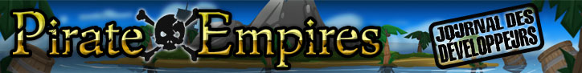

")
 Pirate Empires : 4e partie - Quand le navire chavire...
Pirate Empires : 4e partie - Quand le navire chavire...


23 avril 2009 - Quand le navire chavire...

Cliquez ici pour voir l'image en plus grand.
Sacrebleu ! Voici la suite de notre Journal de bord sur Pirate Empires (ou le processus de d�veloppement d'un jeu). Dans ce chapitre, c'est au tour de Mod Dunk d'entrer en sc�ne et de prendre la plume...
Comme vous le savez, je travaille sur Pirate Empires avec Mod Wivlaro. Derni�rement, il a travaill� sur la carte du monde afin de mettre en corr�lation toutes les zones de batailles navales. En quittant une �le, vous n'aurez qu'� consulter la carte du monde, et � faire un zoom arri�re pour afficher toutes les destinations possibles. Pas de travers�e interminable pour atteindre une �le recul�e ! Vous pourrez voyager rapidement et directement mettre le cap vers d'autres aventures : � vous les bonnes affaires, le pillage, les tr�sors cach�s et les combats en mer. Pour le moment, concentrons-nous sur ces batailles...
L'ennemi s'approche � grande vitesse et vous n'avez pas le temps de recharger vos canons pour l'arr�ter. La collision devient alors in�vitable. Inutile d'imaginer ce qui adviendrait de l'�quipage si lors d'une collision, un navire en embrochait un autre et passait directement � travers. Ce serait effroyable. Heureusement, dans la r�alit�, les pirates sont prot�g�s par les miraculeuses lois de la physique et peuvent dormir sur leurs deux oreilles. Dans le monde du jeu, c'est un peu plus compliqu�. Voil� pourquoi nous utilisons la simulation.
Pour commencer, chaque objet doit avoir une position, une vitesse de d�placement et un angle d'orientation en 3D. Nous d�terminons des r�gles de d�placement qui permettent de modifier les param�tres d'un objet en mouvement, au fur et � mesure qu'il �volue dans l'espace. Nous avons donc �tabli des r�gles pour r�gir la gravit�, les mouvements de frottement, le vent... etc. Mais le plus difficile reste la collision.
En physique, tout corps est compos� d'un nombre infini de particules minuscules qui font pression les unes sur les autres, provoquant ainsi de multiples collisions. Malheureusement, il faudrait des ann�es de calculs informatiques sur des ordinateurs m�ga-puissants pour reproduire un tel niveau de d�tail sur un objet de la taille d'un navire. Pour repr�senter un d�filement de 50 images par seconde sur un ordinateur normal, nous devons donc opter pour une repr�sentation approximative.

Cliquez ici pour voir l'image en plus grand.
Pour ce faire, nous tra�ons autour de nos navires une d�limitation invisible qui se d�place avec eux au cours du jeu. Lorsqu'un boulet de canon franchit une de ces lignes, nous savons que le navire est touch�. Il en va de m�me si les lignes de d�limitation d'un navire croisent les lignes d'un autre navire. Il y a collision. Une fois que les deux navires se sont rentr�s dedans, nous devons les faire s'�loigner l'un de l'autre en appliquant certaines r�gles (changer les valeurs de la position, de la vitesse de d�placement et de l'angle d'orientation de nos bateaux).
Si nous appliquons les bonnes valeurs, les navires devraient pouvoir se percuter avec un temps de r�action tout � fait plausible. Les tirs de boulets de canon, les collisions, les abordages sont des �l�ments courants du quotidien d'un pirate. Mais les plus malins savent qu'il faudra adopter une tactique sp�ciale pour avoir l'avantage dans la bataille.
Sur cette capture d'�cran, les nouvelles ic�nes align�es � gauche repr�sentent les actions qui devraient �tre disponibles dans la version finale du jeu. L'ancre est mon mon option pr�f�r�e. �videmment, c'est un outil essentiel pour faire accoster votre navire mais las capitaines les plus audacieux s'en servent pour faire le tristement c�l�bre coup de l'ancre (gr�ce � une petite simulation de physique en mouvement).
Mod Dunk
D�veloppeur FunOrb
(Film de pirate pr�f�r� : Amarrez-donc !... euh Armageddon !)
Pourquoi les pirates aiment le rhum ? Parce que la gueule de bois est assortie � la jambe de bois.